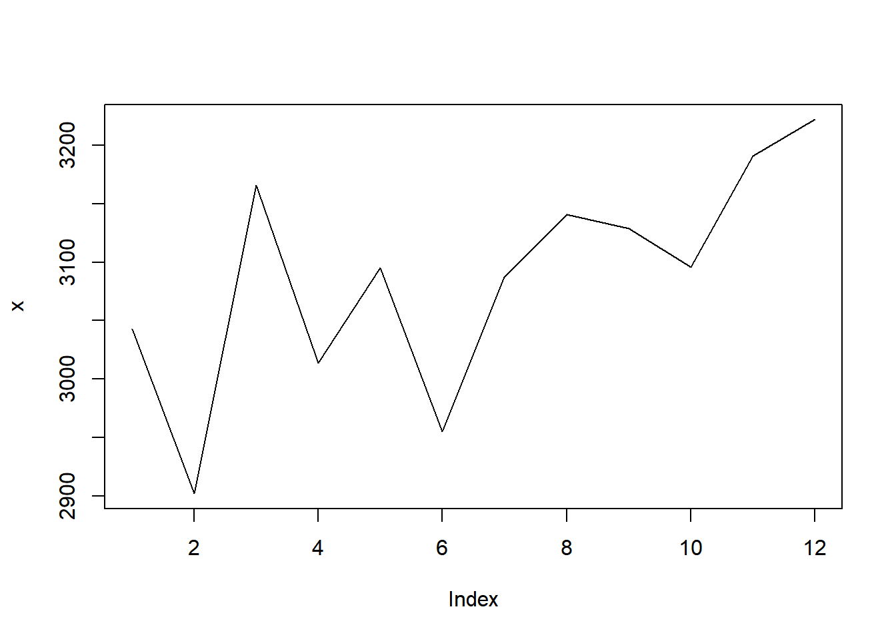
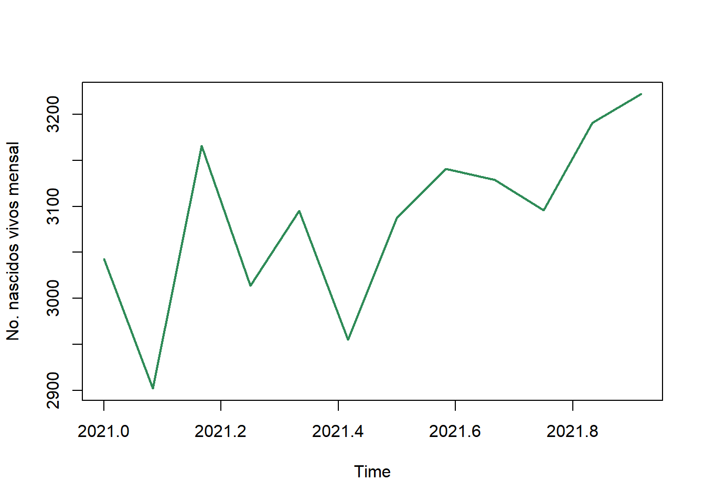
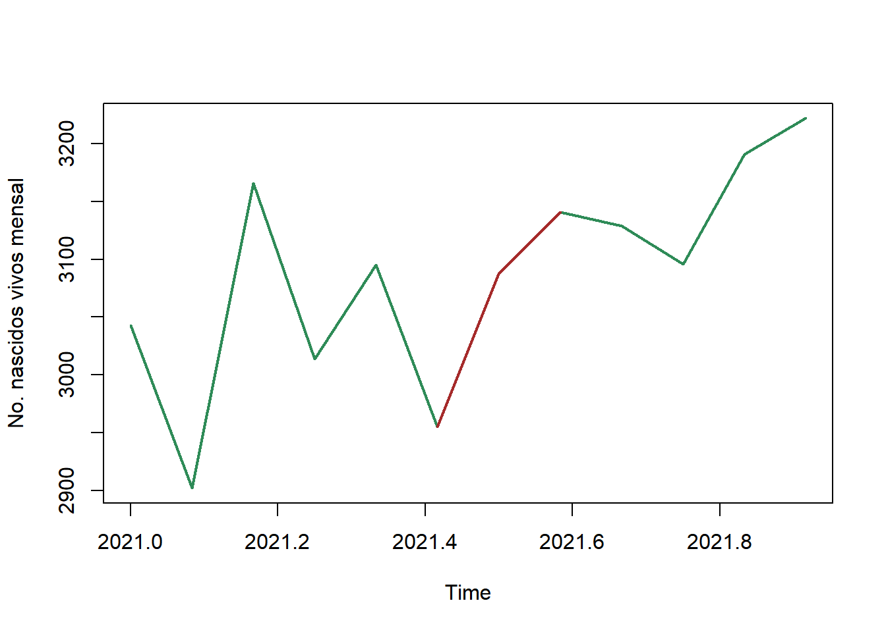
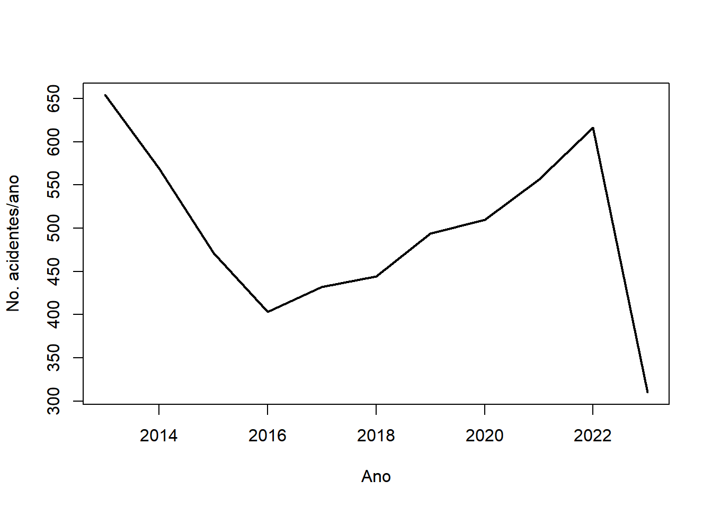
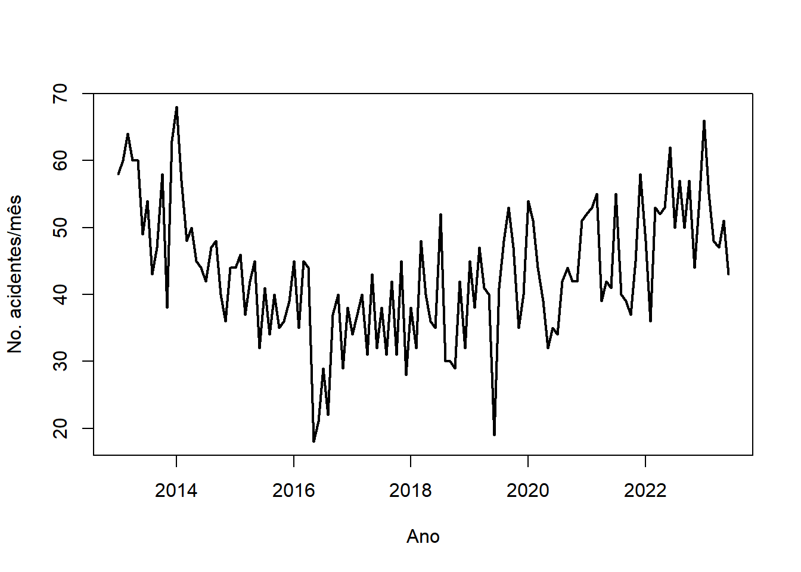

x <- c( 3043, 2902, 3166, 3014, 3095, 2955, 3087, 3141,
3129, 3096, 3191, 3222)4 Criando séries no R
Esta seção tem por objetivo mostrar algumas funções em R para a criação e análise exploratória de séries temporais.
4.1 A classe ts
Para todos os efeitos, uma série temporal é um vetor numérico. O vetor abaixo armazena o número de nascidos vivos por mês na cidade de Manaus em 2021, sendo x[1] o mês de janeiro e assim sucessivamente.
Por sua vez, o gráfico da série temporal pode ser construído utilizando a função plot, com o argumento type='l'.
plot(x, type = 'l')
Contudo, é útil construir a série temporal como um objeto da classe ts. Tal função possui dois argumentos importantes:
frequency: representa o número de observações por unidade de tempo. Por exemplo, se tempo está sendo contado em anos, mas o dados são mensais, entãofrequency=12; se os dados forem trimestrais,frequency=4e assim por diante.start: representa o tempo da primeira observação. Pode ser representado por um único número ou por um vetor de comprimento dois. Esse último caso só é utilizado quandofrequencyé diferente de 1 e representa a ordem, em relação à frequência, da primeira observação. Por exemplo, comfrequency=12, o vetorstart=c(1996,2)implica que a primeira observação data de fevereiro de 1996.
No código abaixo, o vetor criado anteriormente é colocado com um objeto ts
x <- ts( x, start = c(2021,1), frequency = 12)
x Jan Feb Mar Apr May Jun Jul Aug Sep Oct Nov Dec
2021 3043 2902 3166 3014 3095 2955 3087 3141 3129 3096 3191 3222ts.plot(x)
No gráfico acima, a parte decimal no eixo \(x\) representa a fração do tempo entre de um ano (começando em 0 e acumulando 1/12 para cada mês subsequente).
O gráfico pode ser customizado do mesmo modo que um plot. Abaixo segue um exemplo.
plot(x, ylab = 'No. nascidos vivos mensal', lwd = 2, col = 'seagreen')
A função start retorna o início da série, end seu fim e frequency o número de observações por unidade de tempo. Observe o exemplo abaixo.
start(x)[1] 2021 1end(x)[1] 2021 12frequency(x)[1] 12A partir das informações acima, sabe-se a série x é mensal (frequency=12), que sua primeira observação data de janeiro de 2021 e a última de dezembro de 2021.
4.2 A função window
A função window seleciona um subconjunto da série temporal. Abaixo foram selecionados apenas os nascimentos entre Junho e Agosto e este valores foram registrados no gráfico.
z <- window(x, start=c(2021,6), end = c(2021,8))
plot(x, ylab = 'No. nascidos vivos mensal', lwd = 2, col = 'seagreen')
lines(z, col = 'brown', lwd= 2)
4.3 O pacote data.table
Assim como números e textos possuem classes específicas, as datas no ambiente R também possuem sua própria classe, denominada Date.
# 3 de agosto de 1998 (formato americano)
x <- '1998/8/3'
as.Date(x)[1] "1998-08-03"Para que o R entenda uma data fora do padrão americano, é necessário passar o formado para o argumento format. Seguem alguns exemplos:
# 3 de agosto de 1998 (formato nacional)
x <- '3/8/1998'
as.Date(x, format = '%d/%m/%Y')[1] "1998-08-03"x <- '3-8-1998'
as.Date(x, format = '%d-%m-%Y')[1] "1998-08-03"# agosto de 1998
x <- '8/1998'
as.Date(x, format = '%m/%Y')[1] NAAo se trabalhar com fontes originais, é comum ter como unidade amostral um evento com sua data registrada. Em geral, nosso objetivo é determinar a quantidade de eventos dentro de dias, semanas, meses ou anos. O pacote data.table permite lidar com esse problema de modo rápido, criando um objeto deste tipo utilizando a função fread.
Para ilustrar, será utilizada a base de dados de acidentes com aeronaves, mantida pela Força Aérea Brasileira, que registra diariamente o número de acidentes com aeronaves.
library(data.table)
url <- 'https://drive.google.com/uc?authuser=0&id=1iYrnwXgmLK07x8b330aD73scOVruZEuz&export=download'
aereo <- fread(url, encoding = 'Latin-1')
aereo$ocorrencia_dia <- as.Date(aereo$ocorrencia_dia, '%d/%m/%Y')Um objeto do tipo data.table permite uma série de consultas. Em geral, pode-se fazer aereo[a,b,c], onde a é uma consulta/função nas linhas, b nas colunas e c é um agrupador. Uma excelente introdução pode ser vista em Introduction to data.table.
Abaixo, foi selecionada a coluna de interesse ocorrencia_dia.
fab_dia <- aereo[,'ocorrencia_dia',]
head(fab_dia) ocorrencia_dia
1: 2023-04-05
2: 2023-06-24
3: 2023-06-27
4: 2023-06-30
5: 2023-06-25
6: 2023-06-23Ao utilizar o operador .N em [,.N,c], é retornado o número de linhas que possuem o agrupamento em c. Abaixo, as datas do banco são agrupadas por ano.
fab_ano <- fab_dia[, .N, by=.(year(ocorrencia_dia))]
fab_ano <-fab_ano[ order(year) ]
head(fab_ano) year N
1: 2013 654
2: 2014 569
3: 2015 471
4: 2016 403
5: 2017 432
6: 2018 444Os comandos a seguir criam dois objetos do tipo ts, sendo um para o número anual de acidentes e outro para o mensal
fab_ano <- ts( fab_ano, start = 2013)
plot(fab_ano[,2], lwd = 2, ylab = 'No. acidentes/ano', xlab = 'Ano')
fab_mes <- fab_dia[, .N, by=.(year(ocorrencia_dia), month(ocorrencia_dia))]
fab_mes <-fab_mes[ order(year, month ) ]
fab_mes <- ts( fab_mes[,3], start = c(2013, 1), frequency = 12)
plot(fab_mes, lwd = 2, ylab = 'No. acidentes/mês', xlab = 'Ano')
4.4 Exercício
Exercício 1
A série abaixo contém a data dos óbitos maternos no Brasil a partir de 2010.
url <- 'https://drive.google.com/uc?authuser=0&id=1tYFFT9L2iopKmBDUI3P8qNIRaOnMYj7d&export=download'Crie uma série temporal com o número de óbitos mensal e faça um gráfico. Crie uma janela para colocar no gráfico o período da pandemia de COVID-19.